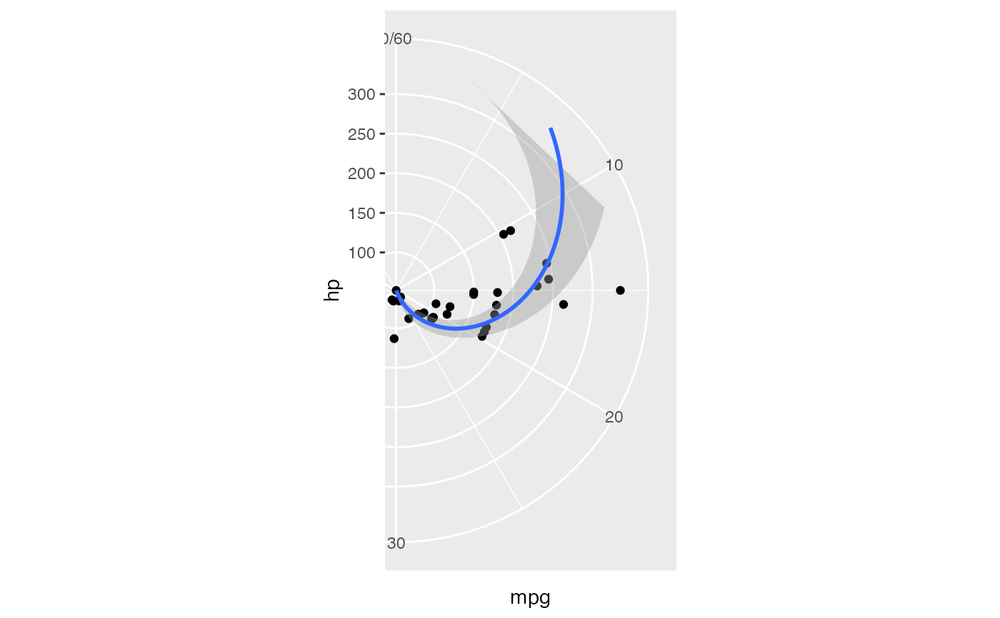
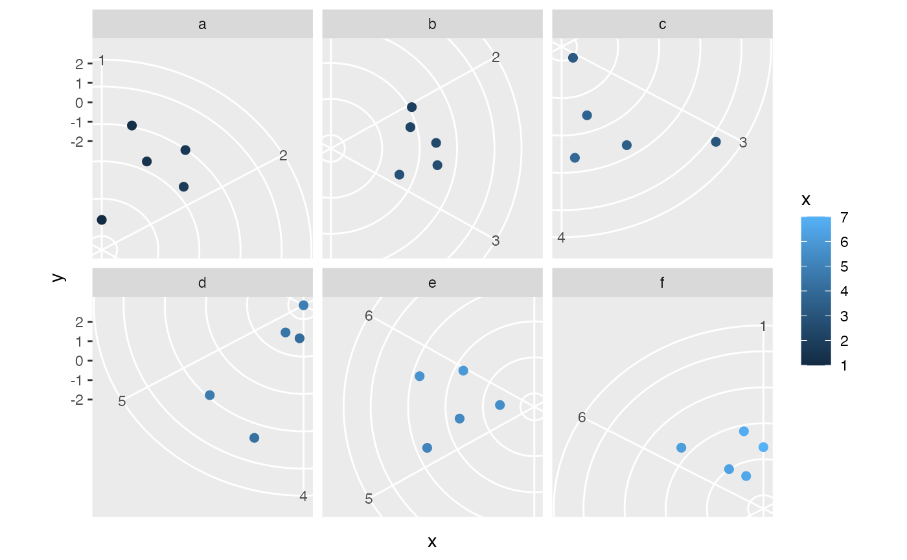

Crop coord_polar
Arguments
- plot
A
ggplot- start, end
The angular values (in radians) marking where the plot starts and ends.
- padding
How much padding to add around the crop?
- fix_aspect.ratio
Should the aspect ratio be fixed?
Details
This function uses
{ggtrace} by June Choe, adapted
from this twitter thread.
Examples
library(ggplot2)
polar_plot <- ggplot(mtcars ,aes(hp, mpg)) +
geom_point() +
geom_smooth(method = "lm") +
expand_limits(y = c(0, 60)) +
coord_polar(start = 0, theta = "y")
crop_coord_polar(polar_plot, end = pi)

crop_coord_polar(polar_plot, end = pi/2)
crop_coord_polar(polar_plot, start = 3 * pi / 2, end = pi / 2)
# Also works with facets!
d <- data.frame(
x = seq(1, 7, length = 6*5),
y = rnorm(6*5),
g = rep(letters[1:6], each = 5)
)
polar_plot_facet <- ggplot(d, aes(x, y)) +
geom_point(aes(color = x), size = 2) +
facet_wrap(~g) +
scale_x_continuous(breaks = seq(0, 6), minor_breaks = NULL) +
coord_polar()
crop_coord_polar(polar_plot_facet, start = pi)
# Use multiple values - one for each facet:
start <- seq(0, 5) * 2 * pi / 6
end <- start + start[2]
crop_coord_polar(polar_plot_facet,
start = start, end = end)
